επόμενο: Πίνακας περιεχομένων και ευρετήριο
εμφάνιση: Διδακτική παρουσίαση
προηγούμενο: Σωστό ή λάθος;
Πίνακας περιεχομένων
Ευρετήριο
Υπάρχουν συχνά πολλοί τρόποι να πάρουμε το ίδιο αποτέλεσμα στο Xcas.
Θα επιλέξουμε τις λύσεις τις πιο συμβατές.
Άσκηση 9.1 Ελέγξτε τις ακόλουθες ταυτότητες.
-
(21/3 +41/3)3 -6(21/3 +41/3) = 6
-
 /4 = 4 arctan(1/5) - arctan(1/239)
/4 = 4 arctan(1/5) - arctan(1/239)
-
sin(5x) = 5 sin(x) - 20 sin3(x) + 15 sin5(x)
-
(tan(x) + tan(y))cos(x)cos(y) = sin(x + y)
-
cos6(x) + sin6(x) = 1 - 3 sin2(x)cos2(x)
-
ln(tan(x/2 + /4)) = argsinh(tan(x))
Άσκηση 9.2 Μετατρέψτε την ρητή συνάρτηση
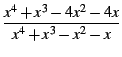
στα ακόλουθα κλάσματα
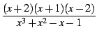 , 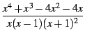 , 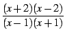 ,
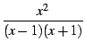 -4

.
Άσκηση 9.3 Μετατρέψτε την ρητή συνάρτηση
2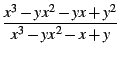
στα ακόλουθα κλάσματα
2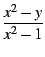 , 2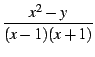 ,
2 - 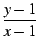 + 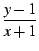 , 2 - 2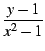 .
Άσκηση 9.4 Θεωρούμε τις συναρτήσεις
f που
ορίζονται ως εξής:
f (x) = 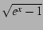 , f (x) = 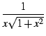 ,
f (x) = 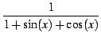 , f (x) = 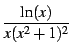 .
Για κάθε μία από αυτές τις συναρτήσεις :
- Υπολογίστε το ολοκλήρωμά της F.
- Υπολογίστε την παράγωγο F'(x) και αποδείξτε ότι
F'(x) = f (x) μετά από απλοποιήσεις.
Άσκηση 9.5 Θεωρούμε τα ακόλουθα
ορισμένα ολοκληρώματα
I = 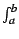
f (
x) d
x:
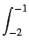 dx , 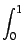x arctan(x) dx ,
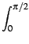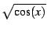 dx , x4sin(x)cos(x) dx .
Για κάθε ένα από αυτά τα ολοκληρώματα :
- Υπολογίστε πρώτα την ακριβή τιμή, και στην συνέχεια την προσεγγιστική
τιμή του ολοκληρώματος I.
- Για n = 100, και στην συνέχεια για n = 1000, και
για κάθε
j = 0,..., n, θέτουμε
xj = a + j(b - a)/n,
και
yj = f (xj).
Υπολογίστε την προσεγγιστική τιμή του ολοκληρώματος I με την
μέθοδο των (αριστερών) ορθογωνίων :
Ir = 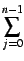f (xj)(xj+1 - xj) .
- Απαντήστε στην παραπάνω ερώτηση με την μέθοδο των τραπεζίων :
It = (f (xj) + f (xj+1))(xj+1 - xj) .
Άσκηση 9.6 Θεωρούμε την συνάρτηση
f που
απεικονίζει το ζεύγος (
x,
y) στο
f (
x,
y) = cos(
xy).
- Θέτουμε
x0 = y0 = /4. Ορίστε την συνάρτηση που
απεικονίζει το (u, v, t)
στο
f (x0 + ut, y0 + vt) .
- Ορίστε την συνάρτηση g που απεικονίζει στο t
την μερική παράγωγο ως προς t
της προηγούμενης συνάρτησης (κατευθυνόμενη παράγωγος).
- Υπολογίστε την κλίση (grad) της συνάρτησης f
στο σημείο (x0, y0),
και στην συνέχεια το εσωτερικό
γινόμενο αυτής της κλίσης με το διάνυσμα (u, v).
Δώστε αυτό το αποτέλεσμα σαν συνάρτηση της g.
Άσκηση 9.7 Θεωρούμε την
x3 - (
a - 1)
x2 +
a2x -
a3 = 0
σαν εξίσωση ως προς
x.
- Παραστήστε γραφικά την λύση x συναρτήσει του a
με την βοήθεια της συνάρτησης
plotimplicit.
- Υπολογίστε τις τρείς λύσεις της εξίσωσης, χρησιμοποιώντας την συνάρτηση
rootof
για την πρώτη, απαλείφοντας την πρώτη με την συνάρτηση quo και
βρίσκοντας τις δύο τελευταίες λύσεις επιλύοντας εξίσωση δευτέρου βαθμού
(χρησιμοποιήστε την συνάρτηση coeff για να υπολογίσετε την
διακρίνουσα
της εξίσωσης).
- Παραστήστε γραφικά κάθε μία από τις τρείς λύσεις στο ίδιο γράφημα
με διαφορετικό χρώμα,
και για τις τιμές a για τις οποίες οι λύσεις αυτές
είναι πραγματικές (Θα μπορούσαμε
να χρησιμοποιήσουμε την συνάρτηση
resultant για να βρούμε τις τιμές του a
για τις οποίες η εξίσωση έχει μία πολλαπλή ρίζα στο x, αυτές οι τιμές είναι τα δυνατά
όρια των διαστημάτων στο a όπου καθε μία ρίζα είναι πραγματική).
- Δώστε τις τιμές των λύσεων για a = 0, 1, 2.
Άσκηση 9.8 Θεωρούμε τα ακόλουθα όρια.
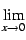

, 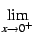(sin(
x))
1/x , 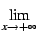(1 + 1/
x)
x , (2
x +3
x)
1/x
Για κάθε ένα από αυτά :
- Δώστε την ακριβή του τιμή.
- Βρείτε μία τιμή του x έτσι ώστε η απόσταση της f (x)
στο όριο να είναι μικρότερη από
10-3.
Άσκηση 9.9 Σχεδιάστε τις ακόλουθες συναρτήσεις
f,
επιλέγοντας το διάστημα
των τετμημένων και των τεταγμένων, έτσι ώστε να πάρετε την γραφική
παράσταση με τις πιο πολλές δυνατές
πληροφορίες.
- f (x) = 1/x.
- f (x) = ex.
-
f (x) = 1/sin(x).
-
f (x) = x/sin(x).
-
f (x) = sin(x)/x.
Άσκηση 9.10 Θεωρούμε την συνάρτηση
f (
x) = 3
x2 +1 + 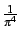ln((
-
x)
2).
- Δείξτε ότι η συνάρτηση αυτή παίρνει αρνητικές τιμές στο
+. Σχεδιάστε την συνάρτηση στο διάστημα [0, 5].
- Προσδιορίστε
> 0 έτσι ώστε στο Xcas να
δώσει μία σωστή γραφική παράσταση της συνάρτησης στο διάστημα
[ - , + ].
Άσκηση 9.11
- Σχεδιάστε την συνάρτηση exp(x) στο διάστημα [-1, 1].
Σε αυτό το γράφημα, σχεδιάστε επίσης τα
πολυώνυμα Taylor αυτής της συναρτήσεις στο x = 0, τάξης
1, 2, 3, 4.
- Το ίδιο για το διάστημα [1, 2].
- Σχεδιάστε την συνάρτηση sin(x) στο διάστημα
[- ,]. Στο ίδιο γράφημα, σχεδιάστε επίσης τα
πολυώνυμα
Taylor αυτής της συνάρτησης στο x = 0, τάξης
1, 3, 5.
Άσκηση 9.12 Σχεδιάστε τα ακόλουθα στο
ίδιο γράφημα,
από το 0 μέχρι το 1 και στους δύο άξονες.
- Την συνάρτηση y = x.
- Την συνάρτηση
f : x 1/6 + x/3 + x2/2.
- Την εφαπτομένη στο γράφημα της συνάρτησης f στο σημείο x = 1.
- Ένα κάθετο τμήμα από τον άξονα των x μέχρι το
σημείο τομής της συνάρτησης f με την συνάρτηση y = x,
και ένα οριζόντιο τμήμα από αυτό το σημείο τομής
μέχρι τον άξονα των y.
- Οι λεζάντες "σταθερό σημείο" και "εφαπτομένη", να τοποθετηθούν στο
γράφημα σαν γραμματοσειρές .
Άσκηση 9.13 Ο στόχος της άσκησης είναι ο σχεδιαμός
στο ίδιο γράφημα οικογενειών συναρτήσεων.
Επιλέξτε τον αριθμό των καμπυλών, το διάστημα παράστασης,τις κλίμακες των
x και
y καθώς και το βήμα της διακριτοποίησης
των τετμημένων, κατά τέτοιο τρόπο ώστε να πάρετε την
γραφική παράσταση με την περισσότερη πληροφορία.
- Συναρτήσεις
fa(x) = xae-x,
με το a να κυμαίνεται από το -1 εως 1.
- Συναρτήσεις
fa(x) = 1/(x - a)2,
με το a να κυμαίνεται από το -1 εως 1.
- Συναρτήσεις
fa(x) = sin(ax), με το a να
κυμαίνεται από το 0 εως 2.
Άσκηση 9.14 Για κάθε μία από τις ακόλουθες
παραμετρικές καμπύλες, επιλέξτε ένα διάστημα τιμών της παραμέτρου
ώστε να εξασφαλίζεται μία πλήρης και καλή γραφική παράσταση.
-

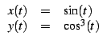
-
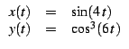
-

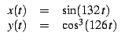
Άσκηση 9.15 Ο στόχος της άσκησης αυτής είναι να
οπτικοποιήσετε με διάφορους τρόπους την επιφάνεια που ορίζεται ως
z =
f (
x,
y) =
x y2.
Ανοίξτε ένα 3Δ γεωμετρικό παράθυρο.
- Επιλέγξτε το πεδίο τιμών και το βήμα διακρτιτοποίησης,
κατά τέτοιο τρόπο ώστε να πάρετε μία καλή παράσταση με
την συνάρτηση
plotfunc.
- Με την συνάρτηση
assume δημιουργήστε μία παράμετρο a
που τροποποιείται με το ποντίκι.
Σχεδιάστε την καμπύλη που ορίζεται από την z =
f (a, y), και στην συνέχεια μεταβάλετε
την παράμετρο με το ποντίκι.
- Δημιουργήστε μία νέα παράμετρο b που τροποποιείται με το ποντίκι.
Σχεδιάστε την καμπύλη που ορίζεται από την z =
f (x, b), και στην συνέχεια μεταβάλετε την παράμετρο
με το ποντίκι.
Άσκηση 9.16 Ο στόχος της άσκησης είναι να οπτικοποιήσετε
έναν κώνο με διαφορετικούς τρόπους.
- Σχεδιάστε την επιφάνεια της εξίσωσης
z = 1 - 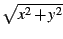.
- Σχεδιάστε την παραμετρική επιφάνεια που ορίζεται από τις εξισώσεις :

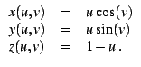
- Επιλέγοντας μία τιμή του a αρκετά μεγάλη, σχεδιάστε
την παραμετρική καμπύλη που ορίζεται από τις εξισώσεις :
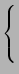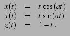
- Σχεδιάστε την οικογένεια των παραμετρικών καμπύλων που ορίζονται
από τις εξισώσεις :

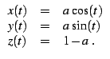
- Σχεδιάστε τον ίδιο κώνο χρησιμοποιώντας την συνάρτηση
cone.
Άσκηση 9.17
- Δημιουργήστε μία λίστα l 100 τυχαίων ακεραίων μεταξύ 1 και 9.
- Ελέγξτε ότι το σύνολο των τιμών της l περιέχονται στο διάστημα
{1,..., 9}.
- Επιλέξτε από την λίστα l όλες τις τιμές 5.
- Για κάθε
k = 1,..., 9, μετρήστε πόσες τιμές της λίστας l
είναι ίσες με k.
Άσκηση 9.18 Εάν το
x είναι ένας πραγματικός αριθμός,
το συνεχές κλάσμα τάξης
n του
x είναι μία λίστα
[
a0,...,
an] ακεραίων,
της οποίας ο πρώτος όρος
a0
είναι το ακέραιο μέρος του
x. Για κάθε
n 0, το
an είναι το ακέραιο μέρος του
αντιστρόφου
του δεκαδικού μέρους του
an-1.
Η λίστα
[
a0,...,
an] αντιστοιχεί στο κλάσμα
un = a0 + 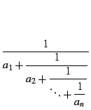
Για
x {
,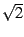,
e} και
n {5, 10} :
- Υπολογίστε
[a0,..., an].
- Συγκρίνετε το αποτέλεσμά σας με αυτό που δίνει η συνάρτηση
dfc
του Xcas.
- Υπολογίστε το un, και δώστε την αριθμητική τιμή του x - un.
Άσκηση 9.19 Γράψτε (χωρίς να χρησιμοποιήσετε βρόχους)
τις επόμενες ακολουθίες :
- Οι αριθμοί από 1 εώς 3 με βήμα 0.1.
- Οι αριθμοί από 3 εώς 1 με βήμα -0.1.
- Τα τετράγωνα των 10 πρώτων ακεραίων.
- Οι αριθμοί της μορφής
(- 1)nn2 για
n = 1,..., 10.
- 10 "0" ακολουθούμενα από 10 "1".
- 3 "0" ακολουθούμενα από 3 "1", ακολουθούμενα από 3 "2",...,
ακολουθούμενα από 3 "9".
- "1", ακολουθούμενο από 1 "0", ακολουθούμενο από "2",
ακολουθούμενο από 2 "0",...
, ακολουθούμενο από "8", ακολουθούμενο από 8 μηδενικά, ακολουθούμενο από "9".
- 1 "1" ακολουθούμενο από 2 "2", ακολουθούμενα από 3 "3",...,
ακολουθούμενα από 9 "9".
Άσκηση 9.20
- Προσδιορίστε τα ακόλουθα πολυώνυμα βαθμού 6.
- το πολυώνυμο του οποίου οι ρίζες είναι οι ακέραιοι 1 και 6.
- το πολυώνυμο του οποίου οι ρίζες είναι το 0 (τριπλή ρίζα), 1
(διπλή ρίζα) et 2 (απλή ρίζα).
- το πολυώνυμο (x2 -1)3.
- το πολυώνυμο x6 - 1.
- Γράψετε (χωρίς να χρησιμοποιήσετε την συνάρτηση
companion)
τον συνοδευτικό πίνακα A που αντιστοιχεί σε κάθε ένα
από αυτά τα πολυώνυμα.
Υπενθυμίζουμε ότι ο συνοδευτικός πίνακας που αντιστοιχεί στο πολυώνυμο :
P = xd + ad-1xd-1 + ... + a1x + a0 ,
είναι ο :
- Υπολογίστε τις ιδοτιμές του πίνακα A.
- Υπολογίστε το χαρακτηριστικό πολυώνυμο του A.
Άσκηση 9.21
- Γράψτε τον τετραγωνικό πίνακα A τάξης 4, έτσι ώστε aj, k = a εάν j = k και
aj, k = b εάν j
 k, όπου a και b είναι μεταβλητές.
k, όπου a και b είναι μεταβλητές.
- Υπολογίστε και παραγωντοποιήστε το χαρακτηριστικό πολυώνυμο του A.
- Ορίστε έναν ορθογώνιο πίνακα P έτσι ώστε
PΤAP να είναι
ένας πίνακας διαγώνιος.
- Χρησιμοποιήστε την προηγούμενη ερώτηση για να ορίσετε την συνάρτηση
που έχει αντιστοιχεί στον ακέραιο n τον πίνακα An.
- Υπολογίστε το Ak, για
k = 1,..., 6 με γινόμενα πινάκων,
και επαληθεύστε ότι η συνάρτηση που ορίζεται στην προηγούμενη ερώτηση δίνει το ίδιο
αποτέλεσμα.
Άσκηση 9.22
- Γράψτε τον τετραγωνικό πίνακα N τάξης 6, έτσι ώστε
nj, k = 1 εάν k = j + 1 και
nj, k = 0 εάν
k j + 1.
- Υπολογίστε το Np, για
p = 1,..., 6.
- Γράψτε τον πίνακα A = xI + N, όπου x είναι μία μεταβλητή.
- Υπολογίστε τοAp, για
p = 1,..., 6.
- Υπολογίστε το exp(At) συναρτήσει των x και t :
exp(At) = I + 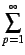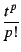Ap .
Άσκηση 9.23 Γράψτε τις ακόλουθες συναρτήσεις, χωρίς
να χρησιμοποιήσετε βρόχους.
- Η συνάρτηση f έχει τρία ορίσματα, εναν ακέραιο n
και δύο πραγματικούς a, b, και επιστρέφει
τον πίνακα A του οποίου οι διαγώνιες τιμές είναι a, και όλοι οι υπόλοιποι όροι είναι ίσοι με b.
- Η συνάρτηση g έχει τέσσερα ορίσματα, έναν
ακέραιο n και τρείς πραγματικούς a, b, c,
και επιστρέφει
τον πίνακα
A = (aj, k)j, k=1,..., n του οποίου οι
διαγώνιοι όροι είναι ίσοι με a,
οι όροι aj, j+1 είναι ίσοι με b και
οι όροι aj+1, j είναι ίσοι με c, για
j = 1,..., n - 1 (οι υπόλοιποι όροι είναι μηδέν).
- Η συνάρτηση H έχει ένα όρισμα, τον ακέραιο n και
επιστρέφει έναν πίνακα
A = (aj, k)j, k=1,..., n
που ορίζεται ώς
aj, k = 1/(j + k + 1) (πίνακας του Hilbert).
Συγκρίνετε τον χρόνο εκτέλεσης της συνάρτησης σας με αυτόν της συνάρτησης
hilbert
- Η συνάρτηση V έχει ένα όρισμα, το διάνυσμα
x = (xj)j=1,..., n
και επιστρέφει τον πίνακα
A = (aj, k)j, k=1,..., n
που ορίζεται ως
aj, k = xkj-1 (πίνακας Vandermonde).
Συγκρίνετε τον χρόνο εκτέλεσης της συνάρτησης σας με αυτόν της συνάρτησης
vandermonde
- Η συνάρτηση T έχει ένα όρισμα, το διάνυσμα
x = (xj)j=1,..., n
και επιστρέφει τον πίνακα
A = (aj, k)j, k=1,..., n
που ορίζεται ως
aj, k = x| j-k|+1 (πίνακας Toeplitz).
Άσκηση 9.24 Γράψτε τις ακόλουθες συναρτήσεις. Όλες
έχουν τέσσερα ορίσματα, μία συνάρτηση
f (από το
στο
), και τρείς τιμές
xmin,
x0 και
xmax (έτσι ώστε
xmin x0 xmax).
derive :
Υπολογίζει και σχεδιάζει γραφικά την παράγωγο της f στο διάστημα
[xmin, xmax].
Επιστρέφει την τιμή f'(x0).
tangente :
Σχεδιάζει την συνάρτηση f στο διάστημα
[xmin, xmax], επιθέτει στην ίδια
γραφική παράσταση
την γραφική παράσταση της εφαπτομένης της f στο σημείο x0,
και επιστρέφει την εξίσωση αυτής της εφαπτομένης ως πολυώνυμο πρώτου βαθμού.
araignee :
Σχεδιάζει την συνάρτηση f στο διάστημα
[xmin, xmax],
Όπως και την εξίσωση της ευθείας y = x.
Υπολογίζει και επιστρέφει τις 10 πρώτες επαναλήψεις της f
στο x0
(
x1 = f (x0),
x2 = fof (x0),...).
Σχεδιάζει την ακολουθία των ευθυγράμμων τμημάτων,
εναλλακτικά κάθετα και οριζόντια,
που μας επιτρέπουν να οπτικοποιήσουμε τις επαναλήψεις :
τμήματα που ενώνουν τα σημεία (x0, 0), (x0, x1), (x1, x1),
(x1, x2), (x2, x2), ...
(συγκρίνετε με την συνάρτηση plotseq)
newton_graph :
Σχεδιάζει την συνάρτηση f στο διάστημα
[xmin, xmax].
Υπολογίζει και επιστρέφει τις 10 πρώτες επαναλήψεις
της ακολουθίας ξεκινώντας από το x0
με την μέθοδο του Newton :
x1 = x0 - f (x0)/f'(x0),
x2 = x1 - f (x1)/f'(x1) ... Οι τιμές της παραγώγου είναι
προσεγγιστικές. Η συνάρτηση σχεδιάζει στο ίδιο γράφημα ευθύγραμμα τμήματα που
επιτρέπουν την οπτικοποιήση των επαναλήψεων : τα τμήματα αυτά ενώνουν τα σημεία
(x0, 0),
(x0, f (x0)), (x1, 0),
(x1, f (x1)), (x2, 0),
(x2, f (x2)),...
(συγκρίνετε με την συνάρτηση newton)
Άσκηση 9.25 Συμβολίζουμε με
D
το μοναδιαίο τετράγωνο :
D =]0, 1[
2. Έστω 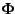
η εφαρμογή που ορίζεται στο
D από την εξίσωση
(x, y) = (z(x, y), t(x, y)) = 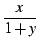 , 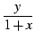 .
- Υπολογίστε τον αντίστροφο της εφαρμογής.
- Προσδιορίστε και σχεδιάστε γραφικά την απεικόνιση
 του D από το :
= (D).
του D από το :
= (D).
- Έστω A(x, y) ο ιακωβιανός πίνακας του
σε ένα σημείο (x, y) του
D, και B(z, t) ο ιακωβιανός πίνακας του
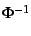 σε ένα σημείο (x, y) του
. Υπολογίστε αυτούς τους δύο πίνακες, και βεβαιωθείτε ότι οι
πίνακες
B((x, y)) και
A(x, y) είναι ο ένας αντίστροφος του άλλου.
- Έστω
J(z, t) η ορίζουσα του πίνακα B.
Υπολογίστε και απλοποιήστε την
J(z, t).
- Υπολογίστε
I1 = 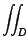


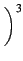 d
xdy .
- Υπολογίστε
I2 =

(1 +
z)(1 +
t) d
zdt ,
και βεβαιωθείτε ότι
I1 = I2.
επόμενο: Πίνακας περιεχομένων και ευρετήριο
εμφάνιση: Διδακτική παρουσίαση
προηγούμενο: Σωστό ή λάθος;
Πίνακας περιεχομένων
Ευρετήριο
Βιβλιογραφία του giac από τους Renee De Graeve, Bernard Parisse και Bernard Ycart
Μετάφραση στα Ελληνικά : Γιώργος Νασόπουλος. Διασκευή : Αλκιβιάδης Γ. Ακρίτας